All digital implant system
치과진료를 굉장히 세밀한 치료이기 때문에 정밀한 3D 디지털 기술을 접목하면
의료진의 판단에만 의존하면 치과진료를 더욱 정확하게 예측하고 판단하여 오차를 줄일 수 있습니다.
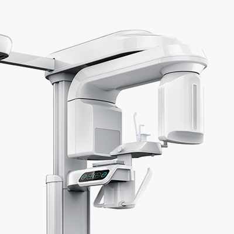
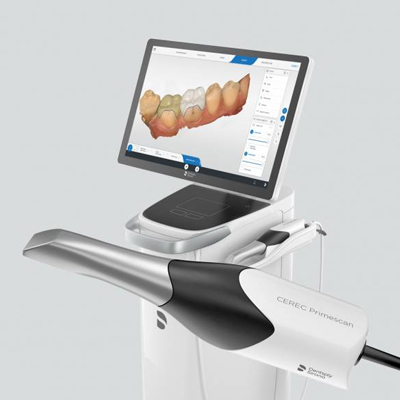
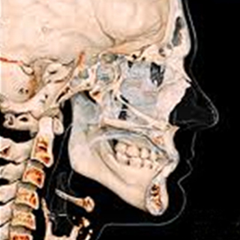
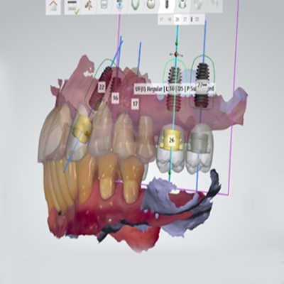
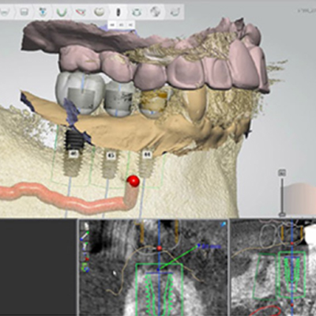
기존의 평면적이었던 X-ray나 파노라마 보다 더 정확하고 더 정밀한
3D CT를 이용하여 치아 뿌리의 상태, 위치, 이동 가능량, 잇몸뼈 등
치아와 잇몸 상태 뿐만 아니라 얼굴 골격까지 진단하여 오차없고 섬세한 치료계획을 수립합니다.
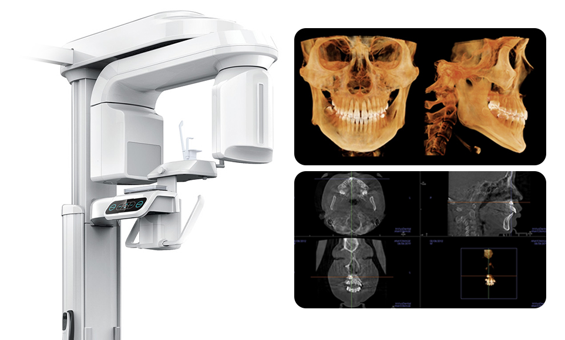
내 치아의 상태를 정확하게 판단하기 위해
3D 디지털 구강스캐너를 사용하여 치아 상태를 정밀하게 스캔하고
디지털 치아 제작 시스템과 연동하여 더욱 더 빠르고 정확한 치료를 받을 수 있습니다.
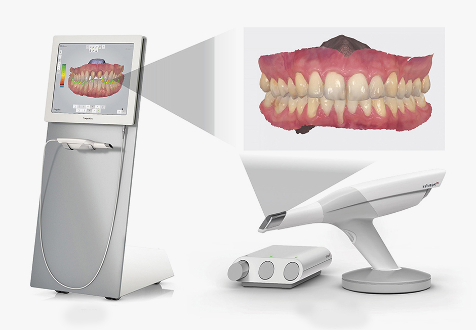
정밀한 치료와
계획이 가능
치료 기간이
단축
환자와의
원활한 소통
치아의 이동을
예측
3D구강스캐너와 CBCT등을 통해 수집한 데이터를 토대로
치아 뿌리의 특성, 얼굴의 골격, 비대칭 정도, 치아의 이동 예측량, 치아의 교합을 꼼꼼하게 분석하고
교정의 치료 결과예측을 위해 삼차원적으로 시뮬레이션하여 오차 없는 치료 계획을 수립합니다.
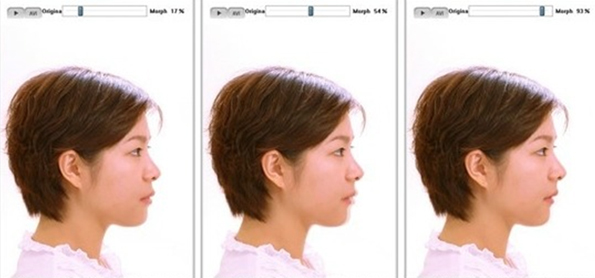
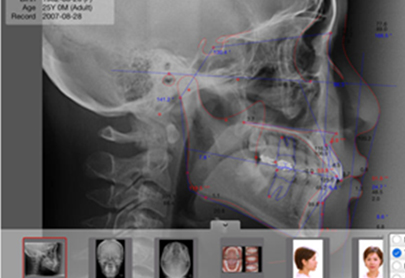
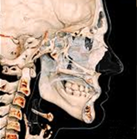
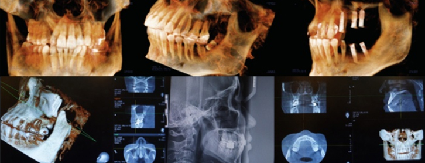
임플란트 수술 전 3D CT를 분석하여 모의 수술하게 되며,
골조직과 신경의 위치를 정확하게 파악하고 시뮬레이션 함으로써
신경손상 가능성이 전무하며 미리 계획된 방향과 위치에 임플란트를 식립할 수 있습니다.
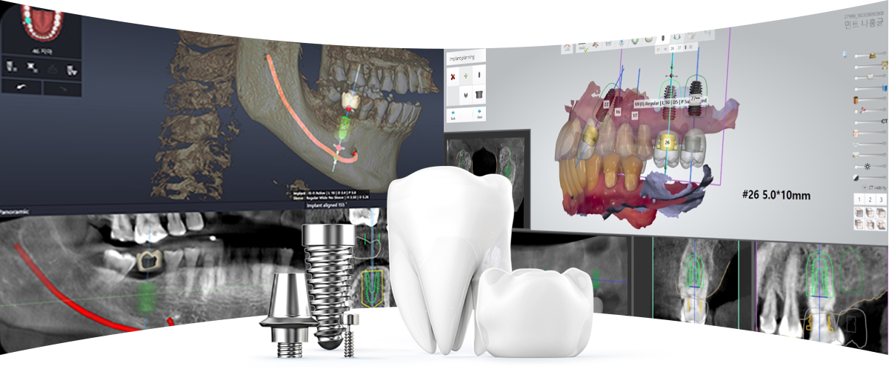
오차 없는 식립을 위해 구강용 정밀 3D 프린터를 이용하여 개인 맞춤형 수술 가이드를 제작합니다.
가이드 수술을 이용한 임플란트 수술은 계획된 위치에 임플란를 식립할 수 있어
간단하고 안전한 수술이 가능합니다.
또한 잇몸 절개 없이 임플란트가 들어갈 수 있는 크기로만 작은 구멍을 내어 수술하므로 통증이 적고 빠른 회복이 가능합니다.
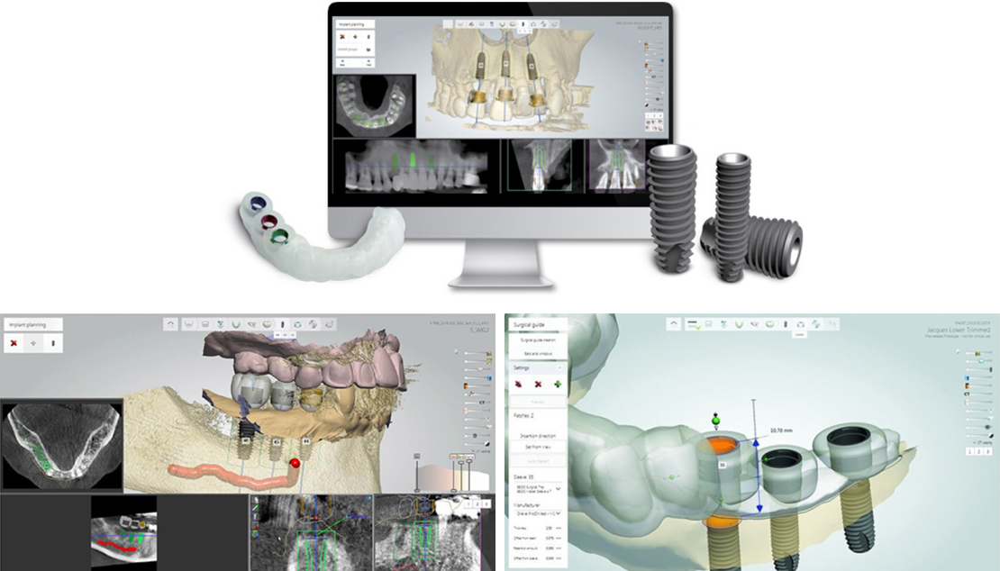